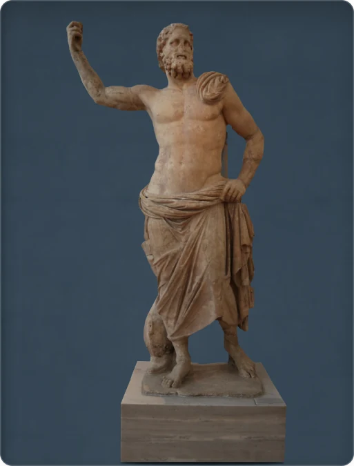

← Back to the collection
Poseidon

An arm raised
The raised right hand probably held a trident. A dolphin beside the leg supports the statue. Found on Melos in 1877, this Greek Hellenistic Poseidon is carved in Parian marble, with a cloak covering his hips.
Greece · Hellenistic period · 125–100 BCE · Parian marble · height 2.35 m · National Archaeological Museum, Athens, inv. 235
Source: National Archaeological Museum ↗
About the gallery